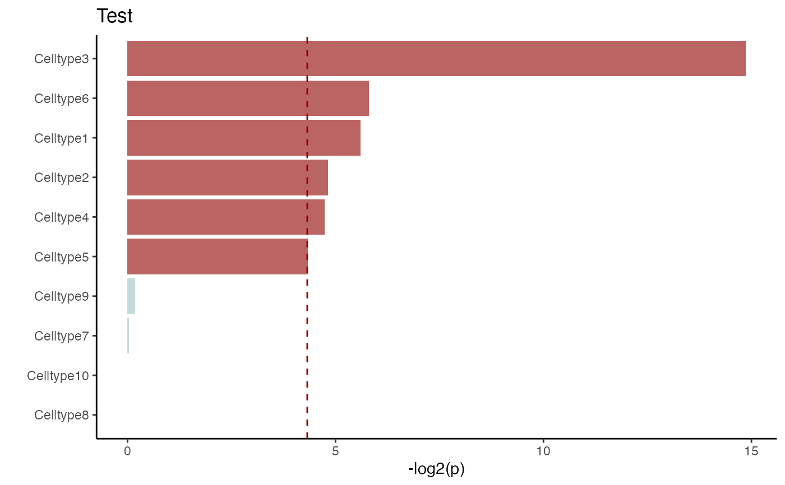

Bootstrap_P_Barplot.RdThis bar plot shows the -log2(p value) for bootstrap result, using the ggplot packages
Bootstrap_P_Barplot(
p_results,
p_names,
title = "Test scPagwas",
figurenames = NULL,
width = 5,
height = 7,
do_plot = TRUE
)vector p results
names for p
The title names of the plot
The filename and address of the output plot, default is "test_barplot.pdf".IF figurenames= NULL, only plot the figure and have not pdf figure.
figure width, default is 5
figure height,default is 7
whether to plot the plot.
A figure of barplot in pdf format, red color is significant.
library(scPagwas)
load(system.file("extdata", "Pagwas_data.RData", package = "scPagwas"))
Bootstrap_P_Barplot(p_results=Pagwas_data@misc$bootstrap_results$bp_value[-1],
p_names=rownames(Pagwas_data@misc$bootstrap_results)[-1],
width = 5,
height = 7,
do_plot=TRUE,
title = "Test")
